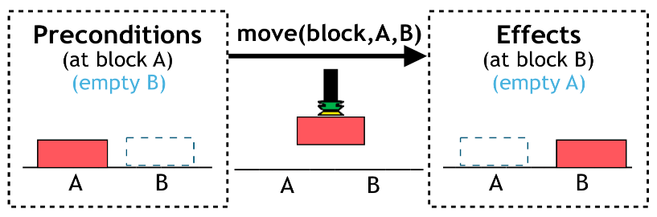

<link rel="import" href="../../bower_components/polymer/lib/utils/gestures.html">
<link rel="import" href="../../bower_components/iron-input/iron-input.html">
<link rel="import" href="../../bower_components/polymer/polymer.html">
<link rel="import" href="../../bower_components/paper-button/paper-button.html">
<link rel="import" href="../../bower_components/iron-flex-layout/iron-flex-layout-classes.html">
<link rel="import" href="../../bower_components/iron-icon/iron-icon.html">
<link rel="import" href="../../bower_components/iron-icons/iron-icons.html">
<link rel="import" href="../../bower_components/iron-icons/av-icons.html">
<link rel="import" href="../shared-styles.html">

<dom-module id="pbd-intro">
  <template>
    <style include="../shared-styles"></style>
    <style is="custom-style" include="iron-flex iron-flex-alignment"></style>
    <style>
      :host {
        display: block;
      }

      #next {
        margin-right: 10%;
        float: right;
      }
    </style>
    <div>
        <p>Welcome to the <strong>Programming by Demonstration Planning tool</strong></p>

        <p><strong>Programming by Demonstration (PbD)</strong> is a technique that allows you teach the robot a new action by moving its arms and showing how the action should be performed. The robot observes the changes in the world state <strong>before</strong> and <strong>after</strong> the demonstration and associates <strong>conditions</strong> to the actions:</strong></p>

        <p>
            Once the robot has learned the conditions, you can give the robot a <strong>problem</strong> that it needs to solve using the taught actions. <br>
            The robot then uses an inbuilt <strong>planner</strong> to generate a solution to the problem, which is an action sequence for the robot to execute.
        </p>

        

        <p>In the next steps you will <strong>program a robot</strong> by : <br>
                - teaching the robot new actions by demonstration, <br>
                - assigning conditions to the new actions, <br>
                - defining a goal for the robot to achieve <br>
                - verifying the generated solution.</p>            
    </div>

  </template>
  <script>
    Polymer({
        is: 'pbd-intro',
    });
  </script>
</dom-module>
